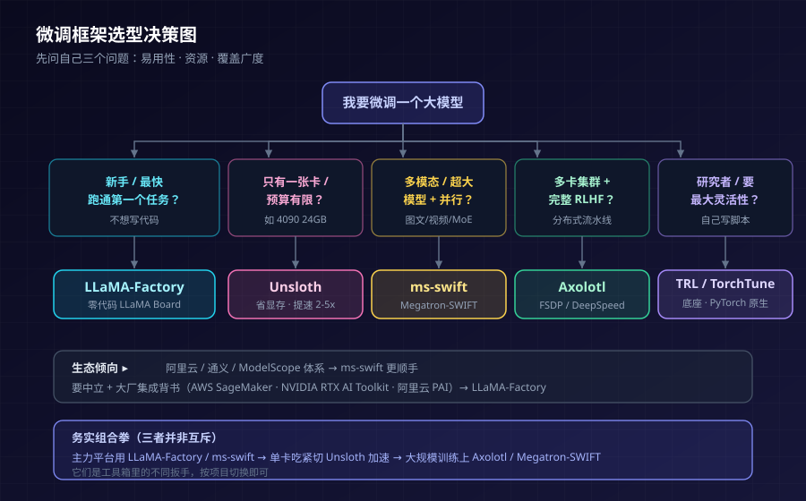

大模型微调框架对比：LLaMA-Factory、ms-swift、Unsloth、Axolotl、TRL、TorchTune 怎么选
2024 年 3 月，一篇名为《LlamaFactory: Unified Efficient Fine-Tuning of 100+ Language Models》的论文登上 ACL；同年 8 月，另一篇《SWIFT: A Scalable lightWeight Infrastructure for Fine-Tuning》被 AAAI 2025 收录。两个来自中国团队的开源微调框架，先后拿下顶会席位。到 2026 年年中，LLaMA-Factory 的 GitHub 星标已越过 6 万、被 Amazon、NVIDIA、阿里云先后集成进产品线，而 ms-swift 支持的模型数量突破 600+ 纯文本 + 400+ 多模态，成为全世界模型覆盖最广的训练框架之一。
微调（fine-tuning）这件事，正从一小撮算法工程师的手工活，变成"选个框架、填几行配置、点个按钮"的标准化流水线。但当可选项从一两个变成六七个，新的问题出现了：它们到底有什么不同？我的场景该用哪个？
这篇文章把当下最主流的六个开源微调框架——LLaMA-Factory、ms-swift、Unsloth、Axolotl、TRL、TorchTune——放到一起，讲清各自的定位、强项、短板，最后给出一张对比表和按场景的选型建议。
为什么"选框架"突然变成了一件要紧事
先说清楚一个前提：这六个框架，绝大多数底层都站在同一批"轮子"上——Hugging Face 的 Transformers、PEFT（参数高效微调）、TRL（强化学习对齐）、bitsandbytes（量化）、DeepSpeed / FSDD（分布式）。也就是说，它们做的事情本质相同：把预训练好的大模型，用你的数据再训练一遍，让它更懂你的任务。
既然底座相似，差异就落在了三个维度上：
- 易用性：是要写 Python 代码，还是填 YAML，还是点网页按钮？新手 10 分钟能不能跑通第一个任务？
- 性能与资源：同样一张显卡，谁能塞下更大的模型、跑得更快、更省显存？
- 覆盖广度：支持多少模型？多模态、强化学习对齐（RLHF / DPO / GRPO）、超大规模分布式训练撑不撑得住？
2026 年的微调环境和两年前已经不同：基座模型更强，往往用更少的样本就能微调出好效果；量化感知训练成熟到 4-bit 微调的模型几乎能和全精度掰手腕。这意味着"能不能在一张消费级显卡上跑起来"不再是奢望，框架之间的体验差距反而被放大了。选对框架，省下的是显卡钱和调试时间。
下面逐个来看。
LLaMA-Factory：零代码 WebUI，新手友好度天花板
LLaMA-Factory（全称 Large Language Model Factory）由郑耀威（GitHub ID：hiyouga）团队主导，是目前"零代码微调"体验做得最完整的框架。它的招牌是内置的 LLaMA Board——一个基于 Gradio 的网页界面，选模型、传数据、调超参、点开始、看训练曲线，全程不用写一行代码。
对于不想碰命令行的用户，这几乎是唯一选择。而对愿意用 CLI 的人，它也把流程压缩到了三条命令：
# 训练、对话测试、导出合并
llamafactory-cli train examples/train_lora/qwen3_lora_sft.yaml
llamafactory-cli chat examples/inference/qwen3_lora_sft.yaml
llamafactory-cli export examples/merge_lora/qwen3_lora_sft.yaml
能力盘点（数据来自官方 README）：
- 模型广度：LLaMA、Qwen3 / Qwen3-VL、DeepSeek（含 R1 / V3）、GLM-4.5、Gemma 3、Mistral / Mixtral、Phi-4、GPT-OSS、InternVL 等 100+ 模型，对前沿模型常做到"Day-0 / Day-1"跟进（如 Qwen3、Gemma 3、Llama 4 首发日即可微调）。
- 训练方法：增量预训练、（多模态）SFT、奖励建模、PPO、DPO、KTO、ORPO、SimPO 全流程覆盖。
- 资源可伸缩：16-bit 全参 / 冻结 / LoRA，以及 2/3/4/5/6/8-bit QLoRA（走 AQLM / AWQ / GPTQ / HQQ / EETQ）。按官方给的显存估算，2-bit QLoRA 下微调一个 7B 模型只要约 4-6GB 显存。
- 先进算法与加速：GaLore、BAdam、APOLLO、Muon、DoRA、LongLoRA、PiSSA、LoftQ；加速侧集成了 FlashAttention-2、Unsloth、Liger Kernel、KTransformers（官方博客演示用 2 张 4090 + CPU 微调千亿级模型）。
- 部署与生态：vLLM / SGLang 推理后端 + OpenAI 风格 API；监控支持 TensorBoard / Wandb / MLflow / SwanLab；国内可从 ModelScope、Modelers Hub 下载；Docker、昇腾 NPU、AMD ROCm 多后端齐全。2025 年 10 月还接入了 Megatron-core 训练后端。
官方给出的一个基准：相比 ChatGLM 的 P-Tuning，LLaMA-Factory 的 LoRA 训练速度快达 3.7 倍，且在广告文案生成任务上 Rouge 分更高。
短板：超大规模多机多卡的成熟度不如 Axolotl，单卡极致性能略逊 Unsloth，官方文档仍标注 WIP（持续完善中）。但作为"什么都能干、上手最快"的通用型选手，它是大多数团队起步的安全牌。
ms-swift：模型最多、多模态最全的国产对手
如果说 LLaMA-Factory 是社区中立的通用工具，那么 ms-swift（ModelScope SWIFT）就是阿里 ModelScope 社区的官方军火库，也是 LLaMA-Factory 最直接的对标者。它的论文中稿 AAAI 2025，定位是"可扩展的轻量级微调基础设施"。
ms-swift 最硬的一张牌是覆盖广度：支持训练 / 推理 / 评估 / 量化 / 部署一体化，覆盖 600+ 纯文本大模型 + 400+ 多模态大模型，是目前模型数量最多的框架，尤其在多模态（MLLM）上覆盖最全——它自称是第一个系统性支持多模态大模型训练的框架。
关键能力：
- 全流程训练：预训练、SFT、人类对齐（DPO / GRPO / KTO / RM 等），PEFT 与全参数训练都支持，含 LoRA、LoRA+、QLoRA、LLaMA-Pro、LongLoRA、NEFTune。
- Megatron-SWIFT：引入 Megatron 并行技术加速超大模型与多模态训练（Dense / MoE / 多模态都支持），配套的 Mcore-Bridge 让训练完的模型能直接用 transformers / vLLM / SGLang 部署。这是它在大规模训练上比 LLaMA-Factory 更有底气的地方。
- 推理与部署：集成 vLLM、LMDeploy 加速；量化支持 GPTQ / AWQ / BNB。
- 生态绑定：和通义千问深度绑定，Qwen 官方训练文档直接把 ms-swift 列为推荐路径。
短板：零代码体验不如 LLaMA-Factory 的 LLaMA Board 傻瓜化，更偏命令行 / 脚本；生态相对绑定 ModelScope 与通义体系。但如果你要做多模态、要上 Megatron 大规模并行、或本来就在阿里云 / 通义体系里，ms-swift 往往是更顺手的那一个。
Unsloth：单卡上的极致省显存与提速
Unsloth 的哲学和前两者完全不同——它不追求"什么都能干"，而是把一件事做到极致：让 LoRA / QLoRA 微调尽可能快、尽可能省显存。
它的做法很硬核：手动推导反向传播步骤，把 PyTorch 模块用 Triton 内核重写，并优化 CUDA kernel。效果是官方与第三方测评反复提到的那组数字——相比标准 Hugging Face TRL 流程，训练快 2-5 倍、显存降 60-80%，让原本需要多卡的 70B 微调，在单张 24GB 的 RTX 4090 上也成为可能。
- 强项：单卡场景性价比之王，个人开发者、学生、显卡预算有限的团队首选；对 Llama、Mistral、Gemma、Qwen 等主流模型优化到位，还配套了对新手友好的 notebook 和干净的导出（GGUF、Ollama、vLLM）。
- 短板：主打单卡，多卡 / 大规模分布式不是它的战场；支持的模型家族比 LLaMA-Factory / ms-swift 窄；深度依赖它自己优化过的模型实现，冷门模型可能没覆盖。
一句话：显卡不够、想在一张卡上榨出最大产出，先看 Unsloth。
Axolotl：多卡集群与完整 RLHF 的重装选手
Axolotl 在英文社区里是"团队 / 企业级"多卡训练的常客。它用 YAML 配置驱动，官方推荐配合 Docker，主打的是多 GPU 集群 + FSDP / DeepSpeed + 完整 RLHF 流水线。
- 强项：多机多卡分布式训练成熟，能干大规模全参微调和端到端的 RLHF；多模态也已从实验走向主流（原生支持 LLaMA-Vision、Qwen2-VL、Pixtral 等）；配置即代码，适合可复现的生产流水线。
- 短板：上手门槛比 LLaMA-Factory 高（官方文档里"30 分钟跑通第一个任务"是常态），没有零代码 WebUI；对纯新手不算友好。
如果你的团队跑的是多卡集群、需要严肃的分布式训练和对齐流水线，Axolotl 是英文生态里的默认答案之一。
TRL：Hugging Face 官方底座，很多框架站在它肩上
TRL（Transformer Reinforcement Learning）是 Hugging Face 官方维护的强化学习 / 对齐训练库，提供 SFT、DPO、PPO、GRPO 等训练器。严格说，它更像是"库"而不是"开箱即用的平台"——上面提到的好几个框架，底层的对齐训练能力都直接或间接依赖它。
- 强项：官方出品、与 Transformers / PEFT 生态无缝衔接，更新最快、最贴合 Hugging Face 的最新特性；想要最大灵活性、自己写训练脚本的研究者会喜欢它。
- 短板：抽象层级低，要写代码、要懂细节；不提供 WebUI，也不像 LLaMA-Factory 那样把最佳实践配方打包好。它更适合"知道自己在做什么"的人。
TorchTune：PyTorch 血统的原生方案
TorchTune 是 PyTorch 官方推出的原生后训练库，主打"用纯 PyTorch、少抽象"的方式做微调。它的论文里明确把 Axolotl、Unsloth 作为对比对象，强调自己在多种设置下兼顾性能与显存效率，同时保持足够灵活以支持快速研究迭代。
- 强项：血统正、依赖干净、和 PyTorch 生态一致性最好；代码可读性高，适合想深入定制训练逻辑的研究团队。
- 短板：生态和模型覆盖不如 LLaMA-Factory / ms-swift 那么"全家桶"，社区规模相对小，零代码程度低。
横向对比一览
下面这张表把六个框架的关键差异拉平了看（"易用性"指对新手的友好程度，非贬义）：
| 框架 | 定位 | 易用性 | 模型覆盖 | 多卡/大规模 | 单卡省显存 | 中文/国产生态 |
|---|---|---|---|---|---|---|
| LLaMA-Factory | 零代码通用平台 | ★★★★★（WebUI） | 100+，前沿跟进快 | 中（已接 Megatron-core） | 强（含 Unsloth 加速） | 强 |
| ms-swift | 全能力国产军火库 | ★★★（偏 CLI） | 600+ 文本/400+ 多模态，最全 | 强（Megatron-SWIFT） | 中 | 强（绑通义/ModelScope） |
| Unsloth | 单卡极致提速省显存 | ★★★★（notebook 友好） | 主流家族为主，较窄 | 弱 | ★★★★★ | 中 |
| Axolotl | 多卡集群/RLHF 流水线 | ★★（YAML+Docker） | 广 | ★★★★★ | 中 | 中 |
| TRL | HF 官方对齐库/底座 | ★★（写代码） | 跟随 HF 生态 | 中 | 中 | 中 |
| TorchTune | PyTorch 原生后训练 | ★★（写代码） | 中 | 中高 | 中高 | 弱 |
说明：星级为相对定位的经验判断，会随各框架版本迭代变化；具体到你的模型和硬件，请以官方最新文档与实测为准。
按场景怎么选：一张决策图
与其记参数，不如对号入座：

- 我是新手 / 想最快跑通第一个微调：LLaMA-Factory，打开 LLaMA Board 点点点即可。
- 显卡就一张、预算有限、想在 4090 上微调大模型：Unsloth，省显存提速是它的看家本领。
- 要做多模态（图文/视频/音频）或超大模型、上 Megatron 并行：ms-swift 首选，Axolotl 次之。
- 团队有多卡集群、要严肃的分布式 + 完整 RLHF 流水线：Axolotl。
- 我是研究者、要最大灵活性、愿意自己写训练脚本：TRL 或 TorchTune。
- 本来就在阿里云 / 通义 / ModelScope 体系里：ms-swift 最顺手；要中立、要大厂集成背书（AWS SageMaker、NVIDIA RTX AI Toolkit、阿里云 PAI 都支持）：LLaMA-Factory。
一个务实的组合拳：用 LLaMA-Factory 或 ms-swift 做主力平台（覆盖全、上手快），在单卡吃紧时切到 Unsloth 加速（LLaMA-Factory 本身就集成了 Unsloth），大规模训练再上 Axolotl / Megatron-SWIFT。它们不是互斥的敌人，而是工具箱里的不同扳手。
国产双雄的正面对比：LLaMA-Factory vs ms-swift
因为这两个是问得最多的组合，单独拎出来对比：
- 模型数量与多模态：ms-swift 明显更多（600+/400+），多模态与 Megatron 大规模并行是它的强项；LLaMA-Factory 100+ 但前沿模型跟进极快。
- 易用性：LLaMA-Factory 的 LLaMA Board 零代码 WebUI 更傻瓜，新手上手更快；ms-swift 更偏脚本 / 命令行。
- 生态绑定：ms-swift 绑 ModelScope + 通义，和 Qwen 系深度协同；LLaMA-Factory 更中立，大厂集成面更广。
- 大规模训练：ms-swift 的 Megatron-SWIFT 更成熟；LLaMA-Factory 2025 年 10 月才接入 Megatron-core，还在追赶。
结论不是"谁碾压谁"，而是看你更看重什么：要极致易用和广泛背书选 LLaMA-Factory，要模型最全和多模态 / 大规模并行选 ms-swift。多数团队两个都装，按项目切换。
几个容易踩的坑
- 模板（template）要对齐：训练和推理必须用同一个 chat template，否则效果会莫名其妙地崩。base 模型和 instruct 模型的模板也不一样。
- 显存估算别只看模型参数：优化器状态往往比权重本身还吃显存——一个 7B 模型 FP32 全参训练要约 84GB（14GB 权重 + 14GB 梯度 + 56GB 优化器状态），这也是 LoRA / QLoRA 存在的意义。
- 量化不是免费午餐：2-bit / 3-bit 能省显存，但精度损失要实测；不是位数越低越好。
- 框架不解决数据问题：微调效果的上限是数据质量。框架再好，脏数据也救不回来。多领域一起微调还要小心"跷跷板效应"（学了新领域、旧能力退化），这是另一个专门的话题。
小结
微调框架的"战国时代"，本质是把一件曾经很难的事拆成了不同的最优解：
- 要易用，LLaMA-Factory 的零代码 WebUI 是天花板；
- 要全，ms-swift 的 600+ 模型和多模态覆盖无出其右；
- 要省，Unsloth 在单卡上把速度和显存榨到极致；
- 要大，Axolotl 和 Megatron-SWIFT 扛得住多卡集群；
- 要灵活，TRL 和 TorchTune 把方向盘交回你手里。
没有"最好的框架"，只有"最适合你当前场景的框架"。看清自己的三个坐标——易用性、资源、覆盖广度——答案自然浮现。而对国内团队来说，一个值得高兴的事实是：这场竞争里跑在最前面的两个（LLaMA-Factory 与 ms-swift），都来自中国团队。
免责声明
本文所述框架特性、模型数量、性能数据均整理自各项目官方 README、论文与公开测评（截至 2026 年 7 月），会随版本迭代变化，具体请以官方最新文档与你自己的实测为准。文中星级评价为相对定位的经验判断，不构成任何选型的唯一依据。文章不含任何商业推广或投资建议。
参考来源
- LLaMA-Factory 官方仓库与 README（hiyouga/LLaMA-Factory）
- LlamaFactory 论文（ACL 2024, arXiv:2403.13372）
- ms-swift 官方仓库（modelscope/ms-swift）
- SWIFT 论文（A Scalable lightWeight Infrastructure for Fine-Tuning, arXiv:2408.05517）
- Qwen 官方文档：MS-SWIFT 训练指南
- Fine-Tuning LLMs in 2026: Axolotl vs Unsloth vs TorchTune vs TRL
- Fine-tuning Tools Comparison（Unsloth/Axolotl/LLaMA-Factory/TRL）
- Hugging Face 博客：Unsloth × TRL 集成
- TorchTune: A PyTorch native post-training library
相关阅读
- 多领域微调的"跷跷板效应"及其解法
- 开源大模型选型对比 2026
- 大模型推理框架对比 2026
- MoE 后训练加速：NeMo 与 AutoModel 实践
- Xinference 私有化推理部署实践指南
推荐搭配装备
善其事，利其器。以下硬件能最大化你的AI体验👇
🔗 通过以上链接购买可支持本站持续运营 🙏